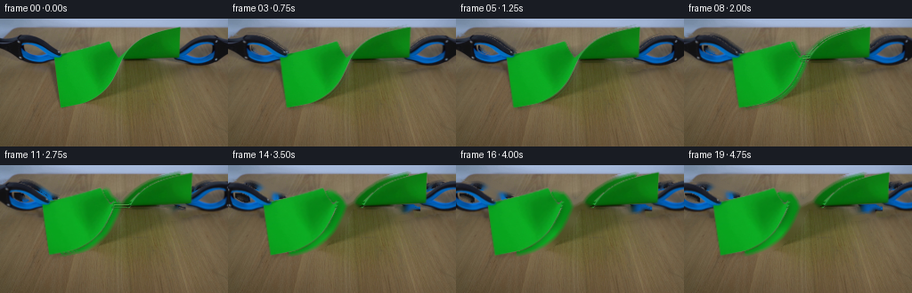
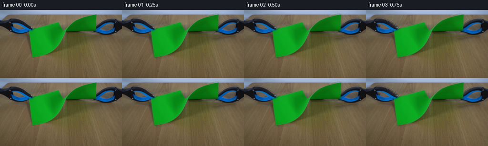
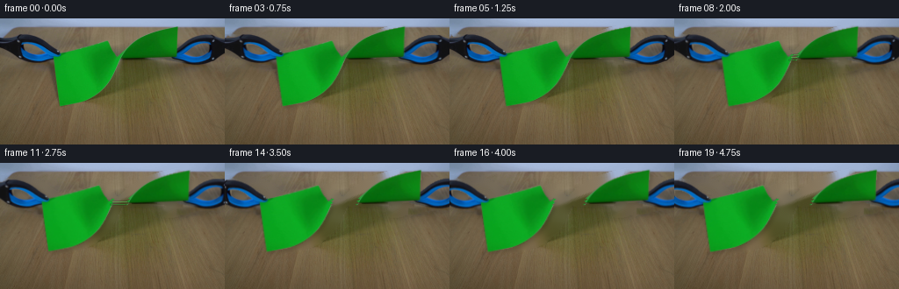
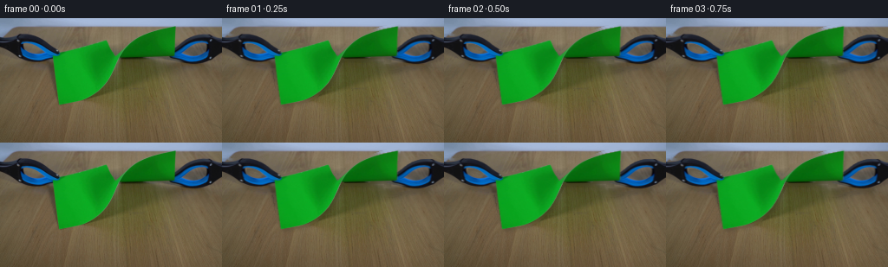

CODING AGENTS AS PIXEL WORLD MODELS
traex/GPT-5.6-Sol · 0044
点击播放 · 原生 RGB 像素
逐轮保存的候选
回放视频、检查图与代码变化。
每份候选均可单独播放。实际图片检查记录在下方工具轨迹中。
候选 01播放与检查图
点击播放 · 原生 RGB 像素


展开代码变化
--- 上一保存版本
+++ 本次保存版本
@@ -0,0 +1,191 @@
+from pathlib import Path
+
+import cv2
+import numpy as np
+from PIL import Image
+
+import artifact_io
+
+
+HERE = Path(__file__).resolve().parent
+H, W = 144, 256
+
+
+def smoothstep(x):
+ x = np.clip(x, 0.0, 1.0)
+ return x * x * (3.0 - 2.0 * x)
+
+
+def largest_component(mask):
+ n, labels, stats, _ = cv2.connectedComponentsWithStats(mask.astype(np.uint8), 8)
+ if n <= 1:
+ return mask.astype(np.uint8)
+ k = 1 + np.argmax(stats[1:, cv2.CC_STAT_AREA])
+ return (labels == k).astype(np.uint8)
+
+
+def affine_layer(rgb, mask, matrix):
+ """Warp a textured cutout using premultiplied alpha."""
+ alpha = cv2.GaussianBlur(mask.astype(np.float32), (0, 0), 0.48)
+ alpha = np.clip(alpha, 0.0, 1.0)
+ premul = rgb.astype(np.float32) * alpha[..., None]
+ wa = cv2.warpAffine(alpha, matrix, (W, H), flags=cv2.INTER_LINEAR,
+ borderMode=cv2.BORDER_CONSTANT, borderValue=0)
+ wp = cv2.warpAffine(premul, matrix, (W, H), flags=cv2.INTER_LINEAR,
+ borderMode=cv2.BORDER_CONSTANT, borderValue=0)
+ out = np.zeros_like(wp)
+ good = wa > 1e-4
+ out[good] = wp[good] / wa[good, None]
+ return out, np.clip(wa, 0.0, 1.0)
+
+
+def composite(canvas, layer, alpha):
+ a = alpha[..., None]
+ return canvas * (1.0 - a) + layer * a
+
+
+def transform_xy(matrix, x, y):
+ return (matrix[0, 0] * x + matrix[0, 1] * y + matrix[0, 2],
+ matrix[1, 0] * x + matrix[1, 1] * y + matrix[1, 2])
+
+
+def build_masks(rgb):
+ hsv = cv2.cvtColor(rgb, cv2.COLOR_RGB2HSV)
+ yy, xx = np.indices((H, W))
+
+ # The green paper is the sole large green component. Closing retains the
+ # photographed mottling while joining tiny compression holes in its surface.
+ green = ((hsv[..., 0] >= 34) & (hsv[..., 0] <= 100) &
+ (hsv[..., 1] >= 32) & (hsv[..., 2] >= 12))
+ green = cv2.morphologyEx(green.astype(np.uint8), cv2.MORPH_CLOSE,
+ np.ones((3, 3), np.uint8))
+ paper = largest_component(green)
+
+ # Grabbers are blue-black, bounded to their known left/right working areas.
+ blueblack = (((hsv[..., 0] >= 88) & (hsv[..., 0] <= 150) &
+ (hsv[..., 1] >= 15) & (hsv[..., 2] < 238)) |
+ (hsv[..., 2] < 92))
+ left_cand = blueblack & (xx < 72) & (yy >= 18) & (yy <= 57) & ~paper.astype(bool)
+ right_cand = blueblack & (xx > 187) & (yy >= 17) & (yy <= 59) & ~paper.astype(bool)
+ kernel = cv2.getStructuringElement(cv2.MORPH_ELLIPSE, (7, 7))
+ left_tool = largest_component(cv2.morphologyEx(left_cand.astype(np.uint8),
+ cv2.MORPH_CLOSE, kernel))
+ right_tool = largest_component(cv2.morphologyEx(right_cand.astype(np.uint8),
+ cv2.MORPH_CLOSE, kernel))
+ # Restore small specular islands enclosed by each dark tool silhouette.
+ left_tool = cv2.morphologyEx(left_tool, cv2.MORPH_CLOSE, np.ones((5, 5), np.uint8))
+ right_tool = cv2.morphologyEx(right_tool, cv2.MORPH_CLOSE, np.ones((5, 5), np.uint8))
+
+ # A slightly irregular cut gives the torn edges visible paper teeth.
+ seam = np.rint(136.0 + 1.35 * np.sin(np.arange(H) * 1.71) +
+ 0.65 * np.sin(np.arange(H) * 0.47 + 0.9)).astype(int)
+ left_paper = paper & (xx <= seam[:, None])
+ right_paper = paper & (xx > seam[:, None])
+ return paper, left_paper.astype(np.uint8), right_paper.astype(np.uint8), left_tool, right_tool, seam
+
+
+def make_frame(source, masks, index):
+ paper, lp_mask, rp_mask, lt_mask, rt_mask, seam = masks
+
+ # First 1.25 s loads the sheet in tension. Thereafter the tear accelerates,
+ # then eases as the demonstrator reaches the end of the pull.
+ if index <= 5:
+ d = 4.0 * smoothstep(index / 5.0)
+ q = 0.0
+ else:
+ q = smoothstep((index - 5.0) / 14.0)
+ d = 4.0 + 24.0 * q
+ separation = 20.0 * (q ** 0.88) if q > 0 else 0.0
+ dy_l = 1.65 * smoothstep(d / 28.0)
+ dy_r = -1.45 * smoothstep(d / 28.0)
+
+ # The outside corners follow the jaws by d pixels. Before failure the inner
+ # paper remains fixed; after failure its two torn edges move by separation.
+ a_l = 1.0 + (d - separation) / 76.0
+ b_l = (60.0 - d) - a_l * 60.0
+ ky_l = -dy_l / 76.0
+ cy_l = dy_l * 136.0 / 76.0
+ ml = np.float32([[a_l, 0.0, b_l], [ky_l, 1.0, cy_l]])
+
+ a_r = 1.0 + (d - separation) / 66.0
+ b_r = (136.0 + separation) - a_r * 136.0
+ ky_r = dy_r / 66.0
+ cy_r = -dy_r * 136.0 / 66.0
+ mr = np.float32([[a_r, 0.0, b_r], [ky_r, 1.0, cy_r]])
+
+ mlt = np.float32([[1.0, 0.0, -d], [0.0, 1.0, dy_l]])
+ mrt = np.float32([[1.0, 0.0, d], [0.0, 1.0, dy_r]])
+
+ lp, la = affine_layer(source, lp_mask, ml)
+ rp, ra = affine_layer(source, rp_mask, mr)
+ lt, lta = affine_layer(source, lt_mask, mlt)
+ rt, rta = affine_layer(source, rt_mask, mrt)
+ new_alpha = np.maximum.reduce([la, ra, lta, rta])
+
+ old_object = np.maximum.reduce([paper, lt_mask, rt_mask]).astype(np.uint8)
+ # Remove just those original-object pixels no longer covered in this frame.
+ # The expanded rim also erases the stationary cast shadow at a vacated edge.
+ old_rim = cv2.dilate(old_object, cv2.getStructuringElement(cv2.MORPH_ELLIPSE, (7, 7)))
+ covered = cv2.dilate((new_alpha > 0.11).astype(np.uint8), np.ones((3, 3), np.uint8))
+ vacated = ((old_rim > 0) & (covered == 0)).astype(np.uint8) * 255
+ base_bgr = cv2.cvtColor(source, cv2.COLOR_RGB2BGR)
+ base_bgr = cv2.inpaint(base_bgr, vacated, 5.0, cv2.INPAINT_TELEA)
+ canvas = cv2.cvtColor(base_bgr, cv2.COLOR_BGR2RGB).astype(np.float32)
+
+ # Soft contact shadows follow both paper and tools over the matte bench.
+ shifted = cv2.warpAffine(new_alpha.astype(np.float32),
+ np.float32([[1, 0, 2.1], [0, 1, 2.8]]), (W, H),
+ flags=cv2.INTER_LINEAR, borderMode=cv2.BORDER_CONSTANT)
+ shadow = cv2.GaussianBlur(shifted, (0, 0), 2.15) * 0.16
+ canvas *= (1.0 - shadow[..., None])
+
+ # Paper below, steel/plastic jaws above: this retains the photographed grip.
+ canvas = composite(canvas, lp, la)
+ canvas = composite(canvas, rp, ra)
+
+ # Fine cellulose bridges persist briefly as the rip opens, then snap.
+ if 0.0 < q < 0.58 and separation > 0.35:
+ fiber_overlay = np.zeros((H, W, 3), np.uint8)
+ fiber_alpha = np.zeros((H, W), np.uint8)
+ fiber_specs = [(41, 0.22, (77, 170, 74)),
+ (44, 0.40, (105, 187, 91)),
+ (47, 0.58, (57, 145, 55))]
+ for y, lifetime, color in fiber_specs:
+ if q < lifetime and paper[y, seam[y]]:
+ x0, y0 = transform_xy(ml, seam[y] - 0.5, y)
+ x1, y1 = transform_xy(mr, seam[y] + 0.5, y)
+ cv2.line(fiber_overlay, (round(x0), round(y0)), (round(x1), round(y1)),
+ color, 1, cv2.LINE_AA)
+ cv2.line(fiber_alpha, (round(x0), round(y0)), (round(x1), round(y1)),
+ 205, 1, cv2.LINE_AA)
+ canvas = composite(canvas, fiber_overlay.astype(np.float32),
+ fiber_alpha.astype(np.float32) / 255.0)
+
+ canvas = composite(canvas, lt, lta)
+ canvas = composite(canvas, rt, rta)
+
+ # A restrained dark crease appears just before rupture at the narrow neck.
+ if 3 <= index <= 6:
+ crease = np.zeros((H, W), np.uint8)
+ strength = int(18 + 15 * (index - 3) / 3)
+ cv2.line(crease, (136, 41), (136, 48), strength, 1, cv2.LINE_AA)
+ ca = (crease.astype(np.float32) / 255.0)[..., None]
+ canvas *= (1.0 - 0.32 * ca)
+
+ return np.clip(np.rint(canvas), 0, 255).astype(np.uint8)
+
+
+def main():
+ source = np.asarray(Image.open(HERE / "first_frame.png").convert("RGB"), dtype=np.uint8)
+ assert source.shape == (H, W, 3)
+ masks = build_masks(source)
+ frames = [source.copy()]
+ frames.extend(make_frame(source, masks, i) for i in range(1, 20))
+ frames = np.stack(frames).astype(np.uint8)
+ # The contract requires exact identity, not merely visual equivalence.
+ assert np.array_equal(frames[0], source)
+ artifact_io.save(frames, HERE)
+
+
+if __name__ == "__main__":
+ main()
候选 02播放与检查图
点击播放 · 原生 RGB 像素


展开代码变化
--- 上一保存版本
+++ 本次保存版本
@@ -84,7 +84,7 @@
return paper, left_paper.astype(np.uint8), right_paper.astype(np.uint8), left_tool, right_tool, seam
-def make_frame(source, masks, index):
+def make_frame(source, masks, clean_plate, index):
paper, lp_mask, rp_mask, lt_mask, rt_mask, seam = masks
# First 1.25 s loads the sheet in tension. Thereafter the tear accelerates,
@@ -122,15 +122,7 @@
rt, rta = affine_layer(source, rt_mask, mrt)
new_alpha = np.maximum.reduce([la, ra, lta, rta])
- old_object = np.maximum.reduce([paper, lt_mask, rt_mask]).astype(np.uint8)
- # Remove just those original-object pixels no longer covered in this frame.
- # The expanded rim also erases the stationary cast shadow at a vacated edge.
- old_rim = cv2.dilate(old_object, cv2.getStructuringElement(cv2.MORPH_ELLIPSE, (7, 7)))
- covered = cv2.dilate((new_alpha > 0.11).astype(np.uint8), np.ones((3, 3), np.uint8))
- vacated = ((old_rim > 0) & (covered == 0)).astype(np.uint8) * 255
- base_bgr = cv2.cvtColor(source, cv2.COLOR_RGB2BGR)
- base_bgr = cv2.inpaint(base_bgr, vacated, 5.0, cv2.INPAINT_TELEA)
- canvas = cv2.cvtColor(base_bgr, cv2.COLOR_BGR2RGB).astype(np.float32)
+ canvas = clean_plate.astype(np.float32).copy()
# Soft contact shadows follow both paper and tools over the matte bench.
shifted = cv2.warpAffine(new_alpha.astype(np.float32),
@@ -179,8 +171,17 @@
source = np.asarray(Image.open(HERE / "first_frame.png").convert("RGB"), dtype=np.uint8)
assert source.shape == (H, W, 3)
masks = build_masks(source)
+ paper, _, _, left_tool, right_tool, _ = masks
+ old_object = np.maximum.reduce([paper, left_tool, right_tool]).astype(np.uint8)
+ # Produce one fixed, locked-off clean plate. Inpainting the complete setup at
+ # once prevents old green pixels from leaking into progressively vacated areas.
+ hole = cv2.dilate(old_object,
+ cv2.getStructuringElement(cv2.MORPH_ELLIPSE, (7, 7))) * 255
+ clean_bgr = cv2.inpaint(cv2.cvtColor(source, cv2.COLOR_RGB2BGR), hole, 6.0,
+ cv2.INPAINT_TELEA)
+ clean_plate = cv2.cvtColor(clean_bgr, cv2.COLOR_BGR2RGB)
frames = [source.copy()]
- frames.extend(make_frame(source, masks, i) for i in range(1, 20))
+ frames.extend(make_frame(source, masks, clean_plate, i) for i in range(1, 20))
frames = np.stack(frames).astype(np.uint8)
# The contract requires exact identity, not merely visual equivalence.
assert np.array_equal(frames[0], source)
可观测工具轨迹
实际执行的命令与返回图片。
命令 1exit 0
/bin/bash -lc "cat GENERATION_RULES.md && printf '\\n--- PROMPT ---\\n' && cat prompt.txt"
命令 2exit 1
/bin/bash -lc "find . -maxdepth 2 -type f -printf '%p\\n' | sort && printf '\\n--- TOOLS ---\\n' && command -v ffmpeg && command -v python3"
命令 3exit 0
/bin/bash -lc "python3 - <<'PY'
from PIL import Image
im=Image.open('first_frame.png')
print(im.mode, im.size)
print(im.getextrema())
PY"命令 4exit 0
/bin/bash -lc "python3 - <<'PY' mods=['numpy','PIL','cv2','scipy','skimage','imageio'] for m in mods: try: x=__import__(m); print(m,'OK',getattr(x,'__version__','')) except Exception as e: print(m,'NO',e) PY command -v ffmpeg || true command -v python3 || true"
命令 5exit 0
/bin/bash -lc "sed -n '1,240p' artifact_io.py"
命令 6exit 0
/bin/bash -lc "python3 - <<'PY'
from PIL import Image
import numpy as np
im=np.array(Image.open('first_frame.png')).astype(int)
h,w,_=im.shape
# 16x9 tile mean + dominant label based rgb
for y0 in range(0,h,8):
row=[]
for x0 in range(0,w,8):
a=im[y0:y0+8,x0:x0+8]; c=a.reshape(-1,3).mean(0)
# classify dominant / brightness
r,g,b=c; v=max(c)
if v<25: ch='K'
elif g>r*1.3 and g>b*1.15: ch='G'
elif b>r*1.25 and b>g*1.05: ch='B'
elif r>g*1.3 and r>b*1.2: ch='R'
elif v-min(c)<12: ch='.' if v>110 else ':'
elif r>g and g>b: ch='Y'
else: ch='?'
row.append(ch)
print(''.join(row))
PY"命令 7exit 0
/bin/bash -lc "python3 - <<'PY'
import cv2, numpy as np
from PIL import Image
im=np.array(Image.open('first_frame.png'))
h,w=im.shape[:2]
Z=im.reshape(-1,3).astype(np.float32)
cv2.setRNGSeed(7)
_,lab,cen=cv2.kmeans(Z,16,None,(cv2.TERM_CRITERIA_EPS+cv2.TERM_CRITERIA_MAX_ITER,100,.2),10,cv2.KMEANS_PP_CENTERS)
lab=lab.ravel(); order=np.argsort(np.bincount(lab))[::-1]
for k in order:
ys,xs=np.where(lab.reshape(h,w)==k)
print(k,'n',len(xs),'rgb',np.rint(cen[k]).astype(int).tolist(),'box', [xs.min(),ys.min(),xs.max(),ys.max()], 'meanxy',[round(xs.mean(),1),round(ys.mean(),1)])
PY"命令 8exit 0
/bin/bash -lc "python3 - <<'PY'
import cv2,numpy as np
from PIL import Image
im=np.array(Image.open('first_frame.png'))
hsv=cv2.cvtColor(im,cv2.COLOR_RGB2HSV)
# several likely masks, report comps
masks={
'green':cv2.inRange(hsv,(35,35,15),(100,255,255)),
'blue':cv2.inRange(hsv,(95,25,8),(140,255,220)),
'dark':cv2.inRange(hsv,(0,0,0),(179,255,48)),
'saturated':cv2.inRange(hsv,(0,80,10),(179,255,255)),
}
for name,m in masks.items():
n,L,st,cent=cv2.connectedComponentsWithStats(m)
print('\\n',name,'total',np.count_nonzero(m))
inds=sorted(range(1,n),key=lambda i:st[i,4],reverse=True)[:12]
for i in inds: print(' area/box/cent',st[i].tolist(), np.round(cent[i],1).tolist())
PY"命令 9exit 0
/bin/bash -lc "python3 - <<'PY'
from PIL import Image
import numpy as np, cv2
im=np.array(Image.open('first_frame.png'))
# sample RGB/HSV on 8 px lattice in relevant upper/middle
hsv=cv2.cvtColor(im,cv2.COLOR_RGB2HSV)
for y in range(8,121,8):
print('y',y, end=' ')
for x in range(8,249,8):
r,g,b=im[y,x]; H,S,V=hsv[y,x]
if V<45: c='K'
elif 35<=H<=95 and S>=40: c='G'
elif 95<=H<=140 and S>=25: c='B'
elif S<35: c='.'
else: c='w'
print(c,end='')
print()
PY"命令 10exit 0
/bin/bash -lc "python3 - <<'PY'
import cv2,numpy as np
from PIL import Image
im=np.array(Image.open('first_frame.png')); hsv=cv2.cvtColor(im,cv2.COLOR_RGB2HSV)
g=cv2.inRange(hsv,(35,35,15),(100,255,255))>0
b=cv2.inRange(hsv,(95,25,8),(140,255,220))>0
d=(hsv[:,:,2]<55)&~g
for name,m in [('GREEN',g),('BLUE',b),('DARK',d)]:
print('\\n'+name)
for y in range(0,110,3):
xs=np.where(m[y])[0]
runs=[]
if len(xs):
p=np.r_[0,np.where(np.diff(xs)>1)[0]+1,len(xs)]
runs=[(int(xs[a]),int(xs[z-1])) for a,z in zip(p[:-1],p[1:]) if z-a>=2]
print(f'{y:3}',runs)
PY"命令 11exit 0
/bin/bash -lc "python3 - <<'PY'
import cv2,numpy as np
from PIL import Image
im=np.array(Image.open('first_frame.png')); hsv=cv2.cvtColor(im,cv2.COLOR_RGB2HSV)
for side in ['L','R']:
roi=(np.indices(hsv.shape[:2])[1]<75) if side=='L' else (np.indices(hsv.shape[:2])[1]>188)
roi &= (np.indices(hsv.shape[:2])[0]>=14)&(np.indices(hsv.shape[:2])[0]<58)
for desc,m in [
('base',(((hsv[:,:,0]>=90)&(hsv[:,:,0]<=145)&(hsv[:,:,1]>=20)&(hsv[:,:,2]<230))|(hsv[:,:,2]<75))&roi),
('broad',(((hsv[:,:,0]>=85)&(hsv[:,:,0]<=150)&(hsv[:,:,1]>=12)&(hsv[:,:,2]<240))|(hsv[:,:,2]<95))&roi)]:
mm=(m.astype('uint8')*255)
mm=cv2.morphologyEx(mm,cv2.MORPH_CLOSE,np.ones((5,5),np.uint8))
n,L,st,c=cv2.connectedComponentsWithStats(mm)
print(side,desc, sorted(st[1:].tolist(),key=lambda z:z[4],reverse=True)[:5])
PY"命令 12exit 0
/bin/bash -lc "python3 - <<'PY'
import cv2,numpy as np
from PIL import Image
im=np.array(Image.open('first_frame.png')); hsv=cv2.cvtColor(im,cv2.COLOR_RGB2HSV)
g=(cv2.inRange(hsv,(35,35,15),(100,255,255))>0)
for x in range(55,210,5):
ys=np.where(g[:,x])[0]
runs=[]
if len(ys):
p=np.r_[0,np.where(np.diff(ys)>1)[0]+1,len(ys)]
runs=[(int(ys[a]),int(ys[z-1])) for a,z in zip(p[:-1],p[1:]) if z-a>=2]
print(x,runs)
PY"命令 13exit 0
/bin/bash -lc "python3 - <<'PY'
import cv2,numpy as np
from PIL import Image
im=np.array(Image.open('first_frame.png')); hsv=cv2.cvtColor(im,cv2.COLOR_RGB2HSV)
for name,(x0,x1,y0,y1) in {'L':(0,75,14,60),'R':(185,256,14,62)}.items():
roi=im[y0:y1,x0:x1]; Z=roi.reshape(-1,3).astype('float32')
cv2.setRNGSeed(3); _,l,c=cv2.kmeans(Z,10,None,(3,100,.1),8,cv2.KMEANS_PP_CENTERS)
print(name)
for i in np.argsort(np.bincount(l.ravel()))[::-1]: print(np.bincount(l.ravel())[i],np.rint(c[i]).astype(int).tolist())
PY"命令 14exit 0
/bin/bash -lc "python3 generate.py && python3 - <<'PY'
from pathlib import Path
import numpy as np
from PIL import Image
src=np.asarray(Image.open('first_frame.png').convert('RGB'))
z=np.load('pixels.npz')['pixels']
# unpack tensor back to video
p=z.transpose(2,0,1)
fr=np.stack([((p>>16)&255),((p>>8)&255),(p&255)],-1).astype('uint8')
print('video',fr.shape,fr.dtype,'first exact',np.array_equal(fr[0],src))
for i in range(20):
d=np.mean(np.abs(fr[i].astype(int)-src.astype(int)))
dc=np.mean(np.abs(fr[i].astype(int)-fr[max(i-1,0)].astype(int)))
print(f'{i:02d} source_MAE={d:6.2f} temporal_MAE={dc:6.2f} changed={np.count_nonzero(np.any(fr[i]"'!=src,axis=2)):5d}'"')
print('outputs',[(x.name,x.stat().st_size) for x in Path('.').glob('*') if x.is_file()])
PY"命令 15exit 0
/bin/bash -lc "python3 - <<'PY'
import cv2,numpy as np
from PIL import Image
for i in [0,1,3,5,6,8,10,12,15,19]:
im=np.array(Image.open(f'frames/{i:02d}.png')); h=cv2.cvtColor(im,cv2.COLOR_RGB2HSV)
g=((h[:,:,0]>=34)&(h[:,:,0]<=100)&(h[:,:,1]>=32)&(h[:,:,2]>=12)).astype('uint8')
n,L,st,c=cv2.connectedComponentsWithStats(g)
comps=[]
for j in sorted(range(1,n),key=lambda k:st[k,4],reverse=True)[:4]:
if st[j,4]>20: comps.append((st[j].tolist(),np.round(c[j],1).tolist()))
# central occupancy on rows 40-48, runs
runs={}
for y in [41,44,47,50]:
xs=np.where(g[y])[0]; p=np.r_[0,np.where(np.diff(xs)>1)[0]+1,len(xs)]
runs[y]=[(int(xs[a]),int(xs[z-1])) for a,z in zip(p[:-1],p[1:]) if z-a>2]
print(i,comps,'runs',runs)
PY"命令 16exit 0
/bin/bash -lc "python3 generate.py && python3 - <<'PY'
import cv2,numpy as np
from PIL import Image
src=np.array(Image.open('first_frame.png'))
for i in [0,1,3,5,6,8,10,12,15,19]:
im=np.array(Image.open(f'frames/{i:02d}.png')); h=cv2.cvtColor(im,cv2.COLOR_RGB2HSV)
g=((h[:,:,0]>=34)&(h[:,:,0]<=100)&(h[:,:,1]>=32)&(h[:,:,2]>=12)).astype('uint8')
n,L,st,c=cv2.connectedComponentsWithStats(g)
comps=[]
for j in sorted(range(1,n),key=lambda k:st[k,4],reverse=True)[:3]:
if st[j,4]>20: comps.append((st[j].tolist(),np.round(c[j],1).tolist()))
print(i,'MAE',round(np.mean(abs(im.astype(int)-src.astype(int))),2),'green',comps)
print('first exact',np.array_equal(np.array(Image.open('frames/00.png')),src))
PY"命令 17exit 0
/bin/bash -lc "python3 -m py_compile generate.py && sha256sum pixels.npz frames/00.png frames/19.png > .tmp/hashes.before && python3 generate.py && sha256sum pixels.npz frames/00.png frames/19.png > .tmp/hashes.after && diff -u .tmp/hashes.before .tmp/hashes.after && python3 - <<'PY'
import numpy as np
from PIL import Image
z=np.load('pixels.npz')['pixels']
assert z.shape==(144,256,20), z.shape
assert z.dtype==np.uint32, z.dtype
p=z.transpose(2,0,1)
frames=np.stack(((p>>16)&255,(p>>8)&255,p&255),axis=-1).astype(np.uint8)
src=np.asarray(Image.open('first_frame.png').convert('RGB'))
assert frames.shape==(20,144,256,3)
assert frames.dtype==np.uint8
assert np.array_equal(frames[0],src)
assert all(np.asarray(Image.open(f'frames/{i:02d}.png')).shape==(144,256,3) for i in range(20))
assert len(list(__import__('pathlib').Path('frames').glob('*.png')))==20
print('PASS: 20 RGB frames, 256x144, uint8; first frame exact; regeneration deterministic')
print('final changed pixels:',np.count_nonzero(np.any(frames[-1]"'!=src,axis=2)))
print('"'pixels.npz bytes:',__import__('pathlib').Path('pixels.npz').stat().st_size)
PY"保存候选 2 份；完成命令 17 次；可验证图片返回 0 张。原始 API 响应与完整日志保留在本地。